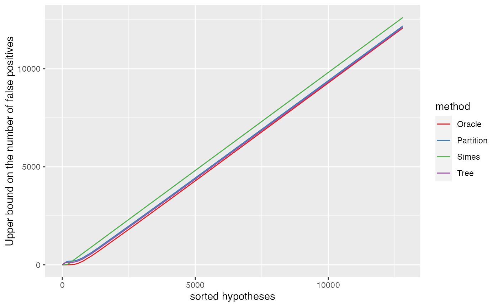
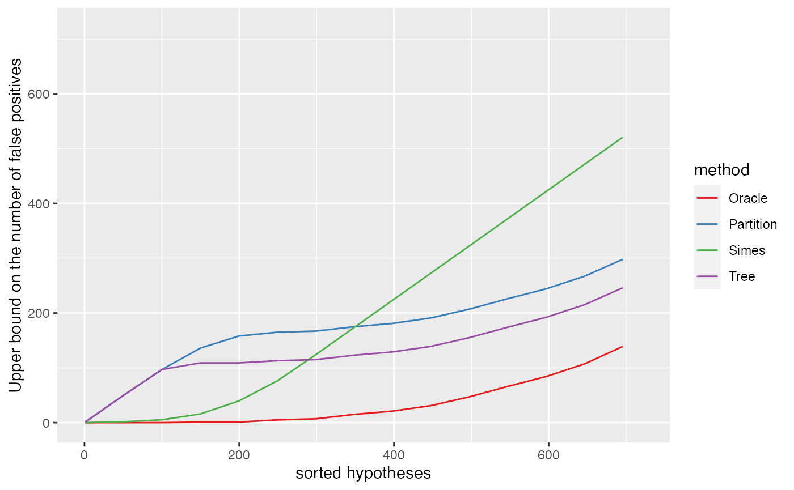
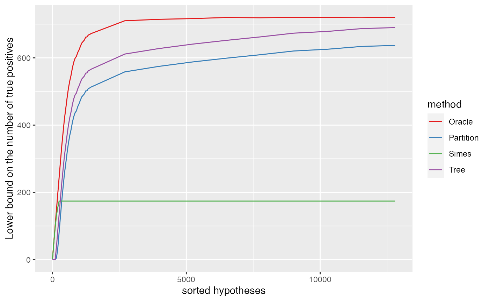
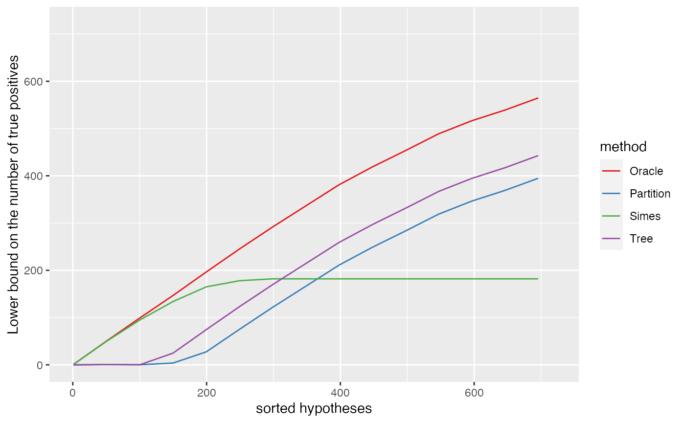

Confidence envelopes for spatially structured hypotheses
G. Durand, G. Blanchard, P. Neuvial, E. Roquain
2020-09-10
confidenceEnvelopes_localized.RmdIntroduction
The goal of this vignette is to illustrate the post hoc bounds on the number of true/false positives proposed in Durand et al. (2020) for localized signals. More specifically, we reproduce one of the plots of Figure 12 in Durand et al. (2020) using the R package sansSouci. We will explicitly quote Durand et al. (2020) when relevant.
library("sansSouci")
Objective
We consider \(m\) null ordered hypotheses partitioned in intervals of size \(s\). For simplicity we set the number of intervals to be a power of 2: \(m = s 2^q\) for some integer \(q\):
s <- 100 q <- 7 m <- s*2^q
Therefore, we have \(m = 1.28\times 10^{4}\).Our goal is to compare three post hoc bounds. These bounds are obtained by interpolation from a reference family where the amount of signal is estimated by probabilistic inequalities, following the general principle laid down by Blanchard, Neuvial, and Roquain (2020), and they differ by the choice of the reference family:
“Simes”: the bound derived from the Simes (1986) inequality as proposed by Goeman and Solari (2011) and further studied by Blanchard, Neuvial, and Roquain (2020). This bound was introduced in a context where the signal is not localized.
“Tree” and “Partition”: two bounds derived from the DKWM inequality (Dvoretzky, Kiefer, and Wolfowitz (1956), Massart (1990)), as proposed in Durand et al. (2020). For the “Partition” bound, the reference family is the original partition \((P_k)_k\) of the \(m\) null hypotheses into \(K=2^q\) intervals. For the “Tree” bound, the reference family is the perfect binary tree whose leaves are the elements of the original partition.
Settings
We define the following numerical parameters, which characterize the true/false null hypothesis configuration considered in Section 5 of Durand et al. (2020):
K1 <- 8 r <- 0.9 m1 <- r*K1*s barmu <- 3
More precisely, quoting Durand et al. (2020):
the false null hypotheses are contained in \(P_k\) for \(1 \leq k \leq K_1\), for some fixed value of \(K_1\). The quantity \(r\) is defined similarly as in (20), as the fraction of false null hypotheses in those \(P_k\), and is set to \(r =0.9\). All of the other partition pieces only contain true null hypotheses.
We start by creating a binary tree structure and generating the signal:
dd <- dyadic.from.window.size(m, s, method = 2) leaf_list <- dd$leaf_list C <- dd$C mu <- gen.mu.leaves(m = m, K1 = K1, d = r, grouped = TRUE, setting = "const", barmu = barmu, leaf_list = leaf_list)
This construction is illustrated in the figure below (Figure 11 in Durand et al. (2020)) in the case where \(q=3\).

Figure 11 in Durand et al.
We generate \(p\)-values according to the simulation setup in Durand et al. (2020):
The true null \(p\)-values are distributed as i.i.d. \(\mathcal{N}(0,1)\), and false null \(p\)-values are distributed as i.i.d. \(\mathcal{N}(\bar{\mu}, 1)\), where [\(\bar{\mu}= 3\)].
pvalues <- gen.p.values(m = m, mu = mu, rho = 0)
Calculate confidence envelopes
The confidence level for post hoc inference is set to \(\alpha = 0.05\).
alpha <- 0.05
Below, we will be considering confidence envelopes of the form \((k, V(S_k))_{1 \leq k \leq m}\), where \(S_k\) is the set of the \(k\) smallest \(p\)-values (regardless of the ordering given by the partition). Note that focusing on such sets is a priori favorable to the Simes bound, for which the elements of the reference family are among the \(S_k\).
ord <- order(pvalues) idxs <- c(seq(from = 1, to = 2*m1, length = 30), seq(from = 2*m1, to = m, length = 10)[-1]) res <- list()
1- True number of false positives
The true number of false positives will be called “Oracle” bound in the plots below.
H0 <- which(mu == 0) V <- cumsum(ord %in% H0) V <- V[idxs] res[["Oracle"]] <- data.frame(idxs, V, method = "Oracle")
2- Simes-based confidence envelope
Here we use the Simes (1986) inequality to bound the number of false positives in each node of the tree, as proposed by Goeman and Solari (2011) and further studied by Blanchard, Neuvial, and Roquain (2020), both in a context where the signal is not localized.
V <- idxs - sapply(idxs, FUN = function(ii) { posthocBySimes(pvalues, ord[1:ii], alpha) }) res[["Simes"]] <- data.frame(idxs, V, method = "Simes")
3- DKWM-based confidence envelope
Here we use the DKWM inequality (Dvoretzky, Kiefer, and Wolfowitz (1956), Massart (1990)) to bound the number of false positives in each node of the tree, as suggested in Durand et al. (2020).
ZL <- zetas.tree(C, leaf_list, zeta.DKWM, pvalues, alpha = alpha) V <- sapply(idxs, FUN = function(ii) { V.star(ord[1:ii], C, ZL, leaf_list) }) res[["Tree"]] <- data.frame(idxs, V, method = "Tree")
C0 <- C[length(C)] ZL <- zetas.tree(C0, leaf_list, zeta.DKWM, pvalues, alpha = alpha) V <- sapply(idxs, FUN = function(ii) { V.star(ord[1:ii], C0, ZL, leaf_list) }) res[["Partition"]] <- data.frame(idxs, V, method = "Partition")
Plot confidence envelopes
library("ggplot2") dat <- Reduce(rbind, res) lvls <- c("Oracle", "Partition", "Simes", "Tree", "Hybrid") cols <- RColorBrewer::brewer.pal(length(lvls), "Set1") names(cols) <- lvls
Upper bound on the number of false positives
xymax <- m1; pV <- ggplot(dat, aes(idxs, V, colour = method)) + geom_line() + ylab("Upper bound on the number of false positives") + xlab("sorted hypotheses") + scale_colour_manual(values = cols) pV

The “Tree” and “Partition” bounds are sharper than the “Simes” bound as soon as we are considering “large” sets of hypotheses. The fact that the “Tree” and “Partition” bounds are not as sharp as the “Simes” bound for the first hundred of hypotheses can be explained by our choice of the ordering of the null hypotheses in the sets \(S_k\), which as discussed above is favorable to the “Simes” bound.
Zooming on the first 720 null hypotheses (in the order of the \(p\)-values):

Lower bound on the number of true positives
The same information can be displayed as a lower bound on the number of true positives, defined for any \(S \subset \{1 \dots m\}\) by \(|S| - V(S)\):
dat$S <- dat$idxs - dat$V
xmax <- m1; ymax <- max(dat$S); pS <- ggplot(dat, aes(idxs, S, colour = method)) + geom_line() + ylab("Lower bound on the number of true positives") + xlab("sorted hypotheses") + scale_colour_manual(values = cols) pS

Zooming in the first 720 null hypotheses (in the order of the \(p\)-values), we recover the middle plot in Figure 12 of Durand et al. (2020).

Session information
## R version 4.0.2 (2020-06-22)
## Platform: x86_64-apple-darwin17.0 (64-bit)
## Running under: macOS Catalina 10.15.6
##
## Matrix products: default
## BLAS: /Library/Frameworks/R.framework/Versions/4.0/Resources/lib/libRblas.dylib
## LAPACK: /Library/Frameworks/R.framework/Versions/4.0/Resources/lib/libRlapack.dylib
##
## locale:
## [1] en_US.UTF-8/en_US.UTF-8/en_US.UTF-8/C/en_US.UTF-8/en_US.UTF-8
##
## attached base packages:
## [1] stats graphics grDevices utils datasets methods base
##
## other attached packages:
## [1] ggplot2_3.3.2 sansSouci_0.8.5
##
## loaded via a namespace (and not attached):
## [1] Rcpp_1.0.5 cpp11_0.2.1 RColorBrewer_1.1-2 compiler_4.0.2
## [5] pillar_1.4.6 highr_0.8 tools_4.0.2 digest_0.6.25
## [9] evaluate_0.14 memoise_1.1.0 lifecycle_0.2.0 tibble_3.0.3
## [13] gtable_0.3.0 lattice_0.20-41 pkgconfig_2.0.3 rlang_0.4.7
## [17] Matrix_1.2-18 yaml_2.2.1 pkgdown_1.6.0 xfun_0.17
## [21] withr_2.2.0 stringr_1.4.0 knitr_1.29 desc_1.2.0
## [25] fs_1.5.0 vctrs_0.3.4 systemfonts_0.3.1 rprojroot_1.3-2
## [29] grid_4.0.2 glue_1.4.2 R6_2.4.1 rmarkdown_2.3
## [33] farver_2.0.3 magrittr_1.5 backports_1.1.9 scales_1.1.1
## [37] matrixStats_0.56.0 htmltools_0.5.0 ellipsis_0.3.1 assertthat_0.2.1
## [41] colorspace_1.4-1 labeling_0.3 ragg_0.3.1 stringi_1.5.3
## [45] munsell_0.5.0 crayon_1.3.4Blanchard, Gilles, Pierre Neuvial, and Etienne Roquain. 2020. “Post Hoc Confidence Bounds on False Positives Using Reference Families.” Annals of Statistics 48 (3): 1281–1303. https://projecteuclid.org/euclid.aos/1594972818.
Durand, Guillermo, Gilles Blanchard, Pierre Neuvial, and Etienne Roquain. 2020. “Post hoc false positive control for structured hypotheses.” Scandinavian Journal of Statistics. https://hal.archives-ouvertes.fr/hal-01829037.
Dvoretzky, Aryeh, Jack Kiefer, and Jacob Wolfowitz. 1956. “Asymptotic Minimax Character of the Sample Distribution Function and of the Classical Multinomial Estimator.” The Annals of Mathematical Statistics 27 (3): 642–69.
Goeman, Jelle J, and Aldo Solari. 2011. “Multiple Testing for Exploratory Research.” Statistical Science 26 (4): 584–97.
Massart, Pascal. 1990. “The tight constant in the Dvoretzky-Kiefer-Wolfowitz inequality.” The Annals of Probability 18 (3): 1269–83.
Simes, R J. 1986. “An improved Bonferroni procedure for multiple tests of significance.” Biometrika 73 (3): 751–54.